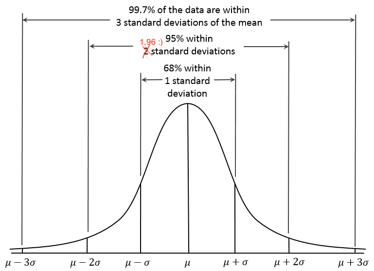

\[SEM=s_x\sqrt{1-r_{tt}}\]
Gdzie:
\(s_x\) - odchylenie standardowe wyników testowych
\(r_tt\) - rzetelność testu
 Zmodyfikowane z Dan Kernler - Own work, CC BY-SA 4.0, https://commons.wikimedia.org/w/index.php?curid=36506025
Skonstruujcie 95% przedział ufności dla wyniku 100 w teście o odchyleniu standardowym 15 i rzetelności 0,902 \[<X-1,96 SEM, X+1,96 SEM>\] \[SEM=s_x\sqrt{1-r_{tt}}\]
\(SE_{diff}=\sqrt{SEM_1^2+SEM_2^2}\) \(SE_{diff}=\sqrt{s_{x1}^2(1-r_{tt1})+s_{x2}^2(1-r_{tt2})}\) \(SE_{diff}=s_{x}\sqrt{2(1-r_{tt})}\)
…i dlatego mamy 95% szansy, że różnica wynosząca minimum \(1,96 * SE_{diff}\) jest nieprzypadkowa.
W tym przypadku poziom ufności p wynosi \(1-0.95=0.05\)
W teście o rzetelności 0,9 i odchyleniu standardowym 5 otrzymaliśmy u jednego badanego wynik 25 a u drugiego 35. Czy mamy prawo twierdzić, że te wyniki się różnią? Przyjmijcie p = 0.05
\(SE_{diff}=s_{x}\sqrt{2(1-r_{tt})}\)